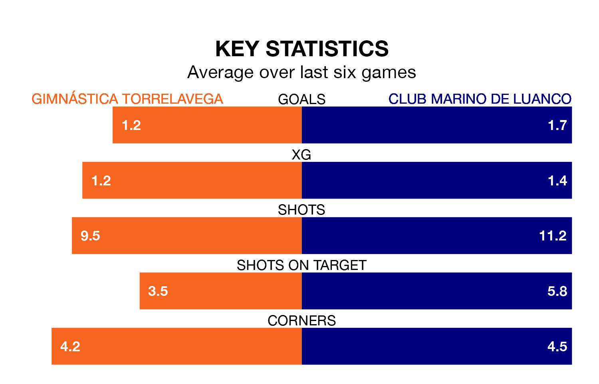

Club Marino de Luanco face Gimnástica Torrelavega on Sunday seeking to protect their long unbeaten run in the Segunda División RFEF Group 1.
Club Marino de Luanco are unbeaten in seven, with three wins and four draws, ahead of the 4pm kick-off.
They face a Gimnástica Torrelavega team who have won one and drawn two over the same number of games.
With 19 goals in 21 games so far this season, Club Marino de Luanco are scoring at below the league average rate with 0.9 goals per game. But they are conceding fewer than average too, letting in 16 goals at a rate of 0.8 per game.
Gimnástica Torrelavega, meanwhile, are above average scorers, with 1.2 goals per game, compared to a league average of 1.1. They have conceded 1.6 goals per game.
The hosts are 15th in the table after 21 games, of which they have won five and drawn five, earning 20 points.
The away team are five places ahead of Gimnástica Torrelavega in 10th, with five wins and 11 draws putting them on 26 points.
In the last three years, Gimnástica Torrelavega and Club Marino de Luanco have played each other on three occasions. Gimnástica Torrelavega won two of them and Club Marino de Luanco one.
Their last meeting was on October 1, when Gimnástica Torrelavega won 1-0 away.
Gimnástica Torrelavega's last match was on February 3, a 2-1 loss against Racing Santander B.
Club Marino de Luanco beat Villalbés 2-0 last time out, on February 4.
Updated: 11:43 (UTC), 08/02/24